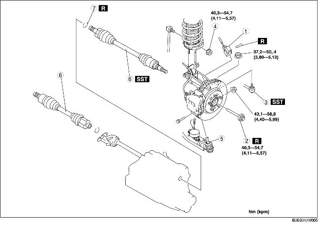

1. Tappa ur växellådsoljan. (Se BYTE AV VÄXELLÅDSOLJA [F35M-R].) (Se BYTE AV AUTOMATVÄXELÅDSSOLJAN (ATF).)
2. Demontera i den ordning som anges i tabellen.
3. Montera i omvänd ordning mot demonteringen.

.
|
1
|
Kontakt för ABS hjulhastighetsgivare
|
|
2
|
Låsskruv
|
|
3
|
Parallellstagände
|
|
4
|
Krängningshämmarens övre länkarmsmutter
|
|
5
|
Kulled, nedre länkarm fram
|
|
6
|
Drivaxel
|
|
7
|
Clips
|
1. Montera en reservbult på drivaxeln.
2. Knacka på bulten med en kopparhammare och separera drivaxeln från axeln.
3. Ta loss drivaxeln från hjulnavet.
4. Separera drivaxeln (vänster) från växellådan genom att pressa med en stav som sätts in mellan ytterringen och växellådan.
5. Koppla ur drivaxeln (höger sida) från mellanaxeln genom att knacka på växellådssidans ytterring med en mässingsstav och en hammare.
6. Montera specialverktygen vid växellådan efter att drivaxeln tagits bort.
1. Montera ett nytt drivaxelclips vid clipsspåret i änden av drivaxeln så att clipsets öppning är riktad uppåt. Clipsets bredd ska vara inom angivna värden.
2. Efter montering mäter du den yttre diametern.
1. Montera drivaxeln i hjulnavet.
2. Lägg på lite växellådsolja på oljetätningens läpp.
3. Montera drivaxeln vid växellådan.
4. Efter montering, dra den yttre ringen på växellådssidan framåt och kontrollera att drivaxeln hålls fast ordentligt av clipset.
1. Montera ett nytt clips på mellanaxeln. (Se DEMONTERING/MONTERING AV MELLANAXEL.)
2. Montera drivaxeln i hjulnavet.
3. Montera drivaxeln i mellanaxeln.
4. Efter montering, dra den yttre ringen på växellådssidan framåt och kontrollera att drivaxeln hålls fast ordentligt av clipset.